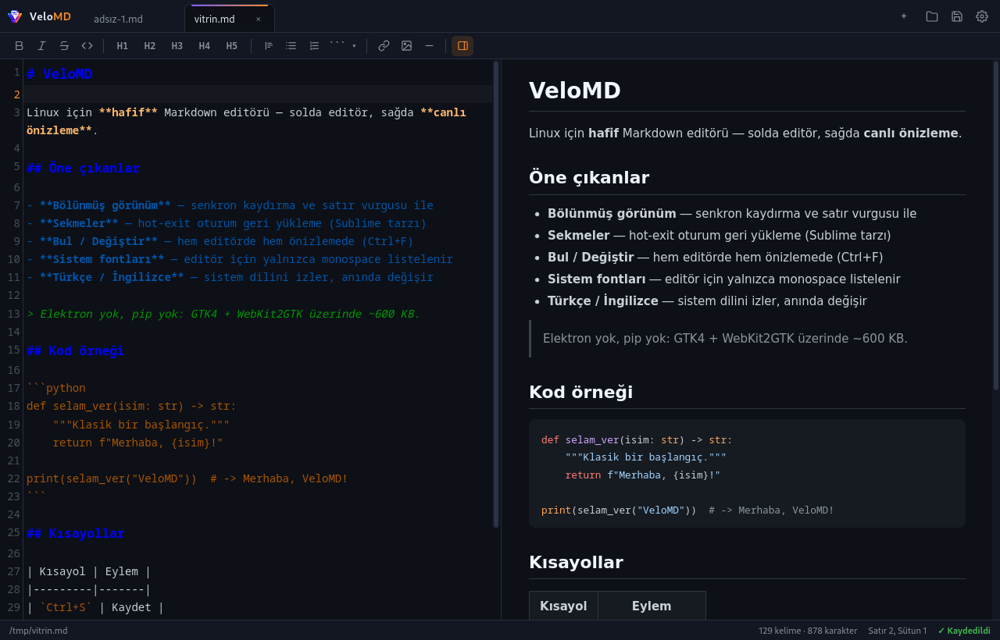

VeloMD
Linux için tüy hafifliğinde Markdown editörü — solda editör, sağda canlı önizleme. Electron yok, pip yok, ~600 KB.
English · Türkçe
GTK4 + WebKit
Python 3.8+
Türkçe / English
~600 KB · çevrimdışı
